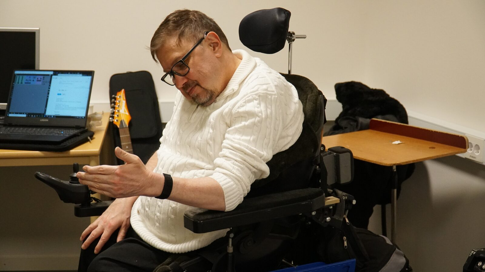
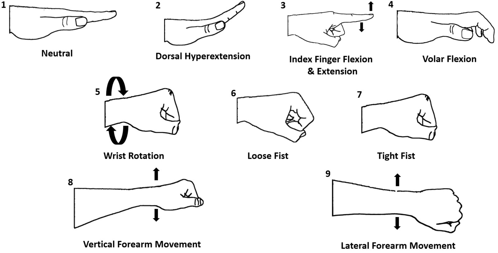

Nerve Sensors in Inclusive Musical Performance
Abstract
We present the methods and findings of a multi-day performance research lab that evaluated the efficacy of a novel nerve sensor in the context of a physically inclusive performance practice. Nerve sensors are a variant of surface electromyography that are optimized to detect signals from nerve firings rather than skeletal muscle movement, allowing performers with altered muscle physiology or control to use the sensors more effectively. Through iterative co-design and musical performance evaluation, we compared the performative affordances and limitations of the nerve sensor to other contemporary sensor-based gestural instruments. The nerve sensor afforded the communication of gestural effort in a manner that other gestural instruments did not, while offering a smaller palette of reliably classifiable gestures.


Introduction
Sensor-based instruments that utilize gestural control have often been implemented to explore issues related to dance/music duality, human/machine/cyborg relations, as well as live data sonification. Artists such as Atau Tanaka and Laetitia Sonami have utilized sensor-based gestural instruments to great artistic effect [1][2]. Additionally, gestural control allows for sound-making that is not strictly reliant on fine-motor movement and dexterity, as is often the case with more traditional instruments like the kora, guitar, or piano. Sensor-based 1 gestural instruments (SBGI) with a focus on increased physical accessibility, such as the Soundbeam 2, have made strides in augmenting the sound-making capabilities of many people with diverse ranges of ability statuses, although they often heavily restrict the sound pallet available to performers.
This paper documents the results of a week-long collaborative creative research lab between Peter Larsson, a performer with extensive experience playing in inclusive ensembles, and Lloyd May, a music technologist with no documented physical disabilities, and seeks to build on the growing trend of NIMEs with a focus on accessibility [3][4]. The goal of the lab was to investigate the creative possibilities of a novel nerve sensor when used as part of a sound making practice with a performer with altered volitional control over large muscle groups. A variety of sensor-positions, gestures, and sound-mappings were explored through experimentation and various sound-making practices including free improvisation as well as the development of a structured composed piece, Frustentions. Additionally, Larsson used the MiMu glove 3 and was able to compare and contrast the relative possibilities of the nerve sensor with the MiMu glove and other SBGI such as the Soundbeam and various iPad sound-making apps, including Gestrument 4, as Larsson experienced them. The paper will begin with an overview of relevant background literature and theory, include a description of the research methods and results, and conclude with a summary of the major findings as well as an outline of possible future work.
Background
Electromyography (EMG) is a technique used to measure the electrical activity of skeletal muscles and nerves through the use of non-invasive sensors placed directly on the skin [5]. EMG has applications in fields ranging from virtual reality therapy to gestural classification for prosthetic devices [6][7]. The relative strength of the electric signal produced by skeletal muscles often results in the assumption that EMG is simply a measurement of muscle activity, as seen in performance devices such as the Myo Armband 5. Dedicated wearable nerve sensors differ from traditional EMG devices as they employ novel hardware configurations and utilize various signal processing and subtraction techniques to increase the relative strength of nerve signal while still using only non-invasive sensors. The motivation in using nerve sensors over traditional EMG has historically been driven by the signal’s relatively greater speed as electrical activity is often detected in a nerve 10-50ms before skeletal muscle movement is measured [8]. This has resulted in applications in gaming, such as the development of a nerve-sensor-augmented gaming mouse 6, as well as in human computer interaction (HCI) more broadly. The measurement and use of these nerve signals can be leveraged to classify a variety of gestures, which are then used as input to a computer. Examples of these HCI applications of nerve sensors include Ctrl-labs’ 7 and Pison’s 8 gesture-based HCI paradigms. Unfortunately, these novel nerve sensors are currently only available through partnerships with these companies as the underlying technology is patent-protected [9]. However, nerve sensors do offer novel use cases when compared to traditional EMG systems. Specifically, nerve sensors can be used by people with muscle atrophy or compromised volitional control of skeletal muscles. This can include, but is by no means limited to, those with diseases such as cerebral palsy (CP) and amyotrophic lateral sclerosis (ALS), arthritis, and age-related muscle atrophy.
Ability, similar to other human identity phenomena like gender and sexual orientation, occurs on a fluid spectrum [10]. That is to say there exists a rich and diverse expanse of lived experience of different physical and mental ability statuses that may change over time, be situation dependent, and differ from person to person. For example, people who self-identify as Deaf often have a wide range of physical ability to detect sound through the auditory nerve that changes over time and have varying relations to the Deaf community, yet have historically been treated as a single, homogeneous group [11].
While technology has sought to augment human physical and mental abilities, it has often approached the topic of accessibility through a potentially harmful curative lens, which ignores the nuance and fluidity inherent in individual’s abilities. This is not only potentially harmful for those who the technology aims to serve, but it additionally draws an artificial boundary around who the technology is supposed to, or even allowed to serve. For example, clear and accessible visual communication of changing information regarding a flight in an airport not only serves D/deaf and hard of hearing passengers, but those who may be unfamiliar with the spoken language or are listening to music on headphones. By artificially defining a boundary around accessibility research and technology development to an arbitrary and often vague group of people, we can create technology that is a disservice to those we are trying to serve, and also alienates others who would benefit from the technology. This is not to say that technology explicitly designed for a specific group of people should not be pursued, but that the nuance with which this work is approached can greatly impact the technology and its use. For example, a subtle shifting in framing of a braille display from “for the visually impaired” to “for those who read braille” is not only more accurate, but actively invites people who may not self identify as visually impaired to explore the technology and it does not require users to out themselves as overtly.
In sound-making practices, the contribution and skill of disabled performers and performers with non-traditional mental and physical abilities is often under-valued, or actively overlooked. Yet, especially in novel instrument and interface design, the contributions and insights from these performers can prove invaluable as “accessible design is just good design", or so the design mantra goes. Therefore research into accessible sound-making practices not only invites a more diverse group of people to participate in sound making, which has largely been missing from the discipline, it additionally expands the possibilities for people of various ability statuses to not only make sound in novel ways, but to be allowed the freedom to explore the fluidity of their own ability spectrum. Additionally, we hope that this work encourages both companies and independent practitioners developing novel HCI paradigms to seriously consider musical performance and accessibility as both viable use cases and fruitful grounds for further research.


Figure 1: Depiction of the nine primary gestures utilized throughout the lab.
Design, Exploration, and Composition
The research lab consisted of five consecutive days of iterative co-design and exploration. The parameters that were investigated included: sensor position, gesture types, minimal-movement gestures, as well as various sound-mapping parameters. The lab was structured into several sessions, each concluding with a performative exploration, as well as a structured public showcase and discussion at the end of the lab. The performative explorations took the form of building onto Frustentions, a fixed media composition developed throughout the workshop, or short (5-20 minute) improvisation sessions in multiple styles including: noise, atonal, strict data sonification, and Western tonal. The public showcase included a structured improvisation-based composition and a public discussion session.
The lab was conducted using the Pison two-channel nerve sensor. The sensor was 30mmx40mmx15mm, 65g, mini-USB chargeable, with a 230mm adjustable Velcro strap, and connected via Bluetooth to a laptop running Windows 10. The sensor’s data was read via proprietary software and outputted via open sound control (OSC) at 250 Hz to Max/MSP where it was used to control various sound parameters. As the gestures being used as well as the sensor’s placement changed rapidly throughout the lab, all gesture recognition was programmed in the respective patch without using any external libraries or machine learning techniques. In addition to the two channels of nerve-signal data, the sensor sent traditional inertial measurement unit (IMU) data, which was used to generate approximation of the sensor’s location in physical space as well as the sensor’s orientation and rotational position. Additionally, the sensor’s accelerometer provided a 3-axis measure of acceleration, but was not explicitly utilized in this context as no high-speed gestures were explored. The MiMu glove was also used during the lab as a point of direct comparison. Larsson’s extensive experience with the Soundbeam and the iPad-based Gestrument instruments were used as additional points of comparison and reference.
In addition to overt physical gestures, minimal-movement "neural" gestures where Larsson simply imagined performing a gesture were also investigated. While vivid mental imagery was often enough to trigger a nerve signal, the signal was far weaker and would require a completely different paradigm to study effectively and were therefore not explored in great detail. While sensor position was explored through the workshop, an optimum position of 5cm below the wrist was quickly discovered as this position provided the strongest signal for most gestures. Certain gestural signals were stronger depending on if the sensor was placed on the knuckle-facing side of the forearm (gestures 2, 3, & 4 in Figure 1) or the palm-facing side (gest. 6 & 7).
Gesture and Mapping Efficacy
Various configurations of digital instruments and audio effects were created throughout the lab. As opposed to detailing each digital prototype, this subsection provides an overview of gesture and sound mapping families that were efficacious, as well as their limits within the situation. The default neutral position (gest. 1), was used as a base as it produced low nerve-signal activity and was comfortable to hold for extended periods of time. In addition to overt gestural control, the nerve-sensor was also used to record "deviant" nerve firings which were used as fixed media in the compositional explorations. Through experimentation, three main groupings of gestures became apparent, namely: effort, adjustment, and trigger gestures.
Effort gestures
Unlike flex-sensor or camera based gesture recognition [12], the nerve-sensor afforded the communication of a spectrum of applied effort. Both dorsal hypertension (gest. 2) and tight fist (gest. 7) provided a practical path to sonification of gestural effort, where the gesture could be tightened or tensed to modify a parameter. This gesture was particularly suited to audio effects that are well-aligned to swelling such as distortion, delay, or reverb. However, dorsal hypertension was often difficult or painful to maintain for more than a short period of time. In addition to being invoked while performing another gesture, Larsson noted that effort gestures felt "extra expressive" as there was often a high-degree of synergy between gesture, sound parameter, and expressed emotion while using these gestures.
Adjustment gestures
These gestures (gest. 5, 8, and 9) had clear direction and degree, and could be repeated comfortably. Parameters where continuous, directional control was valued were most effectively controlled via these gestures. This included standard audio effect parameter control, such as delay time or filter sweep, as well as parameters with binned values such as the MIDI note number. Similar to the effort gestures, Larsson provided a few examples of the gesture within a comfortable range of motion for the system to be calibrated to ensure no unnecessary physical pain was required to achieve a particular sonic output. To this end, the majority of continuous parameters had forced limits at the high and low extremes to discourage possible painful movement.
Adjustment gestures often required full focus and were not necessarily accessible at all times during a performance. Therefore, they were suited to altering macro parameters but not as effective in augmenting an ongoing gesture as effort gestures were. Larsson noted that these gestures, both with the nerve-sensor and MiMu glove, were often the most frustrating to perform as the comfortable range of motion could change during a performance.
Trigger gestures
Trigger gestures were flagged as efficacious in precisely cuing percussive sounds or prompting a system-wide change. These were gestures that could be easily threshold-detected, such as brief index finger flexion (gest. 3) or a short, tight fist squeeze (gest. 7). They were mapped to musical parameters where an event trigger was of chief importance, such as triggering the playback of a sample or changing the current scene or clip in Ableton Live. Trigger gestures were especially useful when paired with adjustment gestures. For example, a short fist squeeze would enable editing of a specific parameter, such as delay time, the wrist rotation gesture (gest. 5) would be used to sweep through values, and a final short fist squeeze would save this value in the system.
Comparison with Other SBGI
The nerve sensor was directly compared with the MiMu glove during the lab as Larsson spent roughly equivalent time with both interfaces during the lab. Additional post-hoc comparisons to the iPad-based Gestrument and Soundbeam instruments were made while referencing his previous experience with these instruments. The MiMu glove allowed for recognition of a wider number of gestures with greater accuracy, and its user interface and overall implementation was smoother and required less direct intervention from a technologist. However, the MiMu glove’s larger form factor and disposition towards finer gestural classification made it more challenging to use with limited fine-motor capabilities that may vary over the course of a performance. Additionally, the MiMu glove did not readily allow for the communication or expression of gestural effort and its glove form factor may not be suited for performers with hand-joint constraints.
Unlike Gestrument or other tablet-based SBGIs, the wearable sensor afforded the performer greater opportunities to connect visually with ensemble members or the audience as there was no immediate requirement to view or interact directly with a screen. Gestrument’s wide sonic palette and intricate mapping capabilities were well-suited to a variety of sound-making situations, yet often required fine-motor input or intervention from a technologist on set-up. While the Soundbeam’s simplicity allows for a far quicker setup, its relatively limited sonic palette and gesture recognition capability often create situations where it is less expressive than the other sensors. However, its simplicity is also the main reason many are attracted to it as they begin their exploration of SBGIs.
Conclusions & Future Work
This paper presented the methods and results of a multi-day performance lab that investigated the efficacy of a novel nerve-sensor in a physically inclusive performance paradigm. The sensor’s performative capabilities were explored through various mappings to digital instruments and audio effects, which were used in various musical scenarios including improvisation and fixed media composition. A post-hoc analysis was performed to group gestures and sound mappings into cohesive families, namely: effort, adjustment, and trigger gestures. The strengths and limitations of the sensor were evaluated in the different gesture paradigms and were compared to three contemporary SBGIs: the MiMu glove, Soundbeam, and Gestrument for iPad. The nerve sensor afforded the communication of gestural effort in an emotionally and performatively cohesive manner. However, the nerve-sensor was able to recognize fewer gestures when compared to the MiMu glove and, at its current stage of development, required a large amount of intervention from a technologist to achieve the desired results. Future work includes evaluating the sensor with more participants, in different performance contexts, such as structured inclusive ensembles, comparing it to other EMG based sensor devices, as well as creating a paradigm to study the sensor’s capability to detect and utilize extremely-low movement neural gestures in a musical context.
Ethical Standards
All research was conducted in accordance with ShareMusic’s best practice guidelines. The authors have no financial interest in or obligation to any of the companies whose products were used during the research.
Footnotes
The ’sensor-based’ distinction is made to avoid confusion with other physical-gesture-based performance practices, such as signed-song, and other uses of the term ’gesture’ in a musical context.
↩- ↩
- ↩
- ↩
- ↩
- ↩
- ↩
- ↩
Citations
- ↩Tanaka, A. (2000). Musical performance practice on sensor-based instruments. Trends in Gestural Control of Music, 13(389–405), 284.
- ↩Sonami, Laetitia. (n.d.). Lady glove. [Http://www.sonami.net/lady\textbackslash_glove2.html](http://www.sonami.net/lady_glove2.html). Retrieved from http://www.sonami.net/lady_glove2.html
- ↩Cavdir, D., & Wang, G. (2020). Felt sound: A shared musical experience for the deaf and hard of hearing. In Proceedings of the 20th international conference on new interfaces for musical expression (nime-20).
- ↩Alessandrini, P., & Abtan, F. (2020). Mondgewächse: A collaborative methodology for inclusive audiovisual mappings in instrument design. In Proceedings of the 20th international conference on new interfaces for musical expression (nime-20).
- ↩Enoka, R. (2010). Electromyography (emg). Encyclopedia of Movement Disorders, 1, 444.
- ↩Yoo, J. W., Lee, D. R., Sim, Y. J., You, J. H., & Kim, C. J. (2014). Effects of innovative virtual reality game and emg biofeedback on neuromotor control in cerebral palsy. Bio-Medical Materials and Engineering, 24(6), 3613–3618.
- ↩Hussain, J. S., Al-Khazzar, A., & Raheema, M. N. (2020). Recognition of new gestures using myo armband for myoelectric prosthetic applications. International Journal of Electrical & Computer Engineering (2088-8708), 10(6).
- ↩Lømo, T. (2003). Nerve–muscle interactions. In Handbook of clinical neurophysiology (Vol. 2, pp. 47–65). Elsevier.
- ↩Ang, D. W., Cipoletta, D. O., Karnes, S. J., Kowalczyk, M. P., & Srikumar, S. (2019). Detecting and using body tissue electrical signals. Google Patents.
- ↩Ariel, M. (2001). Accessibility theory: An overview. Text Representation: Linguistic and Psycholinguistic Aspects, 8(8).
- ↩Lane, H. L., Hoffmeister, R., & Bahan, B. J. (1996). A journey into the deaf-world. Dawn Sign Press.
- ↩Rose, C. L. (2020). Pressure zones: A body of works exploring improvisational interdisciplinary performance through an interactive system. Dartmouth College.